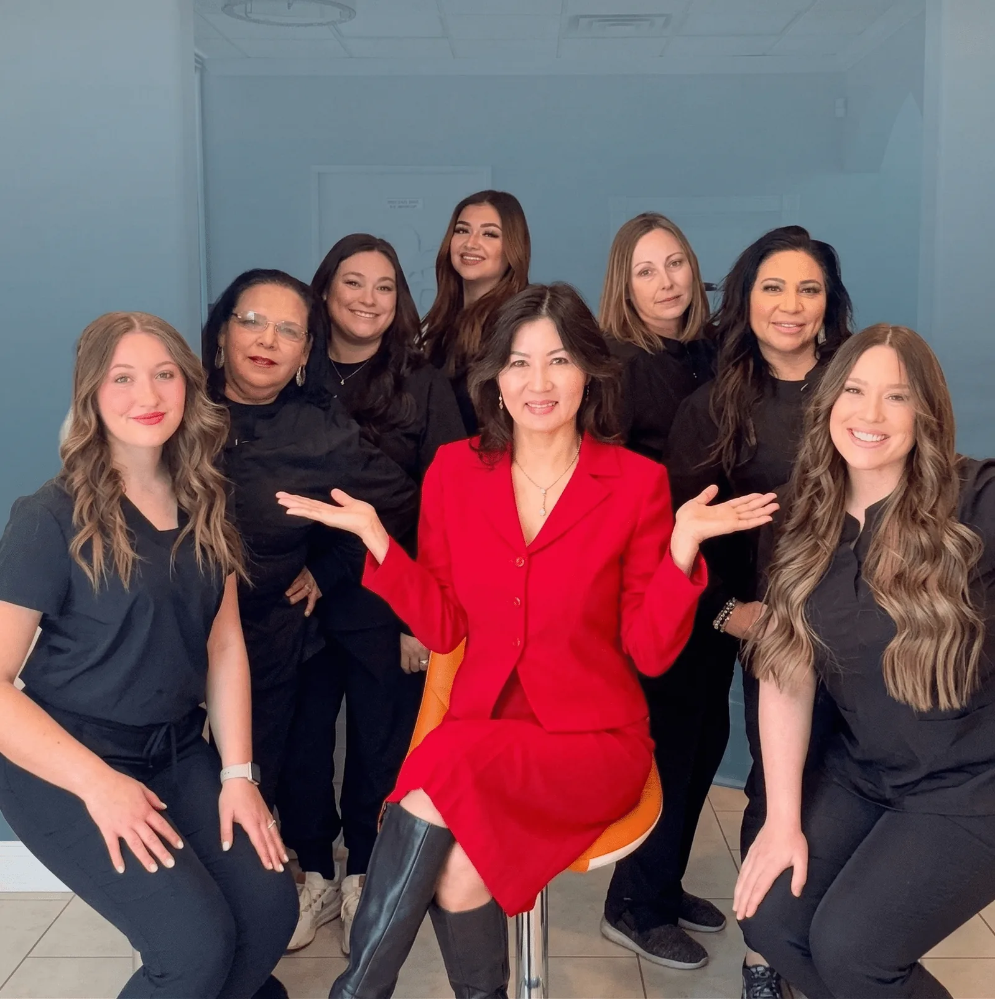
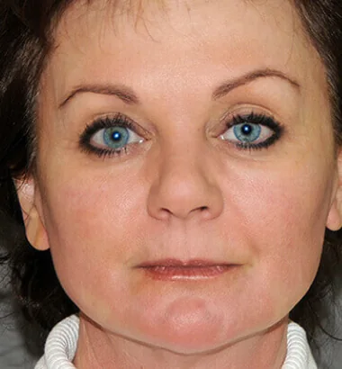
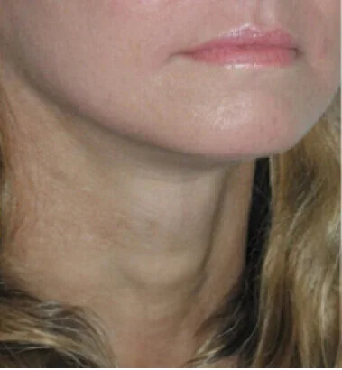
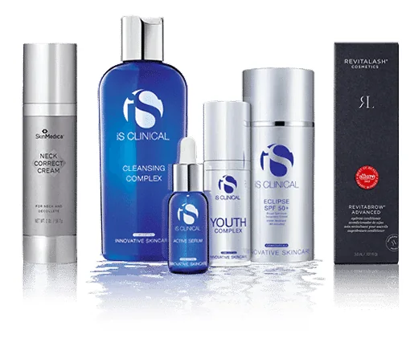
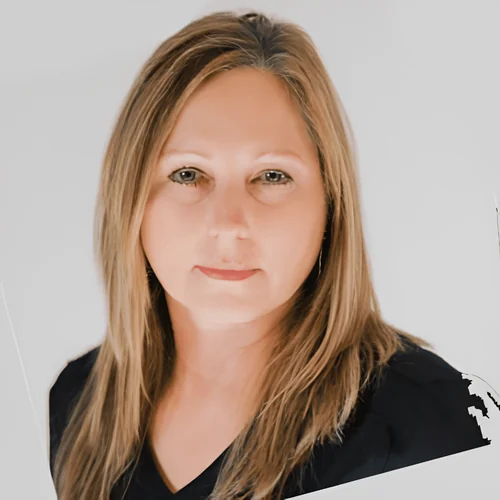

A medical spa with a doctor actually behind it.
Injectables, lasers, non-surgical lifting, hormones and regenerative medicine — planned by a board-certified internist who treats the cause as well as the face.
Dr. Nhi Le, MD · Open until 6pm Monday to Thursday · 4701 N Navarro Street, Victoria
Eighty treatments, one doctor deciding which one you need.
Injectables
- BOTOX® · Dysport® · DAXXIFY®
- Jeuveau® · XEOMIN® · Letybo®
- JUVÉDERM® · Restylane® · RHA®
- Radiesse® · Sculptra®
- Lip enhancement · Hand rejuvenation
- Kybella® · Sclerotherapy
Explore →

Non-surgical lift
- YLift®
- VolumaLift™
- PRP facelift
- Non-surgical facelift
- Non-surgical nose job
- Sofwave™ skin tightening
Explore →

Threads & skin
- MINT™ thread lift
- RF microneedling · SkinStylus™ · Dermapen®
- CO2 fractional · Fraxel Dual · PicoSure® Focus™
- IPL photofacial · RevLite®
- Celebrity Peel · Champagne Facial
- HydraFacial™ · DiamondGlow™ · AQUAGOLD®
Explore →

Wellness & regenerative
- Bio-identical hormones · thyroid testing
- Medical weight loss · peptide therapy
- PRP · exosomes · stem cell therapy
- IV therapy · NAD+ · Myers’ Cocktail
- EMSCULPT NEO® · EMSELLA® chair
- Galleri® multi-cancer screening
Explore →
Before and after, from their gallery.
Forty-six frames sit on a gallery page most visitors never reach. Here they are beside the treatment that produced them.


Individual results vary.
Six people, and you can see all of them.
Nhi Le, MD
Medical Director · Board-certified internist
Advanced certification in Functional and Regenerative Medicine. Medical degree from St. George’s University School of Medicine. Sixteen years in internal medicine, ten in aesthetic and anti-aging. Her patients call her Dr. Lei.
Melissa Garcia
Patient Coordinator · With Dr. Le since 2005
Clinic and spa coordinator, and staff supervisor. Trains the team in clinical procedure.
Jessica Sierra
Certified Medical Assistant · Operations Manager
Ten years in the medical field and fifteen in business and management. Works across both the clinic and the spa.
Adriana Arriaga
RN Injector · Registered nurse
Injectables — tox and filler.

Donna Garcia
Billing Specialist
Shelby Reeves
Medical Aesthetician
A needle in your face is not a haircut.
The single most common reason someone leaves an aesthetics website without booking is that they never found out who would be treating them. Fountain of Youth already has the answer. It is just buried.
You have the thing everybody else is missing
Across the aesthetic practices we review, almost none name a physician a consumer can identify — which is what Texas Medical Board rule 22 TAC §165.1 actually asks for. Fountain of Youth names one, with a board certification, a medical school and sixteen years behind her. That belongs on the first screen, beside the booking button, not three clicks into an About menu.
The press already wrote your headline
Three magazine features sit in the media library — the Victoria Advocate Health & Lifestyle piece, Success Lives Next Door, and “Look and feel younger with Dr. Nhi Le.” They are scans nobody can read at the size they are shown. A pull-quote and a masthead from any one of them would do more work than the stock photograph currently occupying that space.
What a physician-led spa does differently.
The cause, not only the face
Dr. Le is an internist first. Hormones, thyroid, metabolism and micronutrients are all tested here, so when tiredness is showing in your skin, the conversation can go further than a treatment for the skin.
One doctor, one plan
The person deciding your injectable plan is the same person who can read your bloodwork. That is unusual in aesthetics, and it is the reason a plan here tends to hold together.
The first in Victoria
Open since 2007. Long enough that the coordinator who books you has been with the practice since 2005, and long enough to have seen what does and does not last.
Everything under one roof
Injectables, lasers, non-surgical lifting, threads, hormones, weight management, IV therapy and regenerative treatments — without being referred across town for each one.
Three memberships, from $79 a month.
Each one banks a monthly amount against treatment and carries a standing discount. Published on their site, and worth far more prominence than it currently gets.
Explore membershipTox Vault — $79 a month
Every dollar banks toward future treatment, with 15% off all tox and filler, and a complimentary dermaplane facial on signing up.
Elite VIP Skin Rejuvenation — $269 a month
A fifty-minute rejuvenating session each month — Celebrity Peel, Champagne Facial, IPL or microneedling — plus 20% off all services and 15% off skincare and supplements.
Ultimate Ageless VIP — $469 a month
A premium monthly treatment such as RF microneedling, Sofwave or Fraxel, with 25% off services and 25% off in-store skincare, and Sculptra and neck Sofwave milestones along the way.
Why it matters
A membership turns a visitor who books once into a patient who comes back monthly. Fountain of Youth already built three of them. They currently live behind an About menu, which is the single easiest thing on this whole page to fix.
Victoria’s first medical spa
Years Dr. Le has practised internal medicine
Boards and colleges she belongs to
Treatments offered under one roof
The things people ask before they book.
I have never had anything done. Where do I start?
With a consultation. Dr. Le or a member of the team looks at your skin, listens to what is actually bothering you, and explains the options and what each involves. Plenty of people book one and decide to do nothing that day — that is a perfectly normal outcome.
Is there really a doctor here?
Yes. Dr. Nhi Le, MD is the medical director. She is a board-certified internist with advanced certification in Functional and Regenerative Medicine, and she also runs Texas Medical and Wellness Clinic. That is unusual for a medical spa and it is the reason the wellness side of the menu exists.
Who will actually be treating me?
Injectables are given by Adriana, our RN injector, and skin treatments by Shelby, our medical aesthetician, with Dr. Le overseeing. You can ask for the same provider each visit, and most patients do.
Why would a med spa run blood tests?
Because tiredness, weight and skin quality often trace back to something measurable — thyroid, hormones, micronutrients. Dr. Le is an internist, so she can investigate that rather than treat only what shows on the surface. It is optional, and it starts with a conversation.
What is the difference between tox and filler?
Tox relaxes the muscles that create movement lines. Filler adds volume or structure where the face has lost it. Which one, where, and how much is a judgement about your face rather than a package you choose in advance.
What is a YLift?
A non-surgical lift done with filler placed deep along the bone structure to restore the scaffolding of the face, rather than filling lines at the surface. It is one of the things this practice is known for, and there is a gallery of results.
How long do results last?
It depends on the treatment and on you. Tox is generally discussed in months, filler in a year or more, and threads and lifts differently again. Your provider will give you a realistic range for your own plan rather than a number off a chart.
Does it hurt?
Most people describe injectables as a quick pinch, and numbing is used where it helps. Lasers and resurfacing feel different again. Ask about the specific treatment you are considering and we will tell you honestly what to expect.
How much downtime should I plan for?
It varies from none to a genuine recovery period, depending on what you have. Tell us about any event you have coming up and we will time the plan around it.
How does the membership work?
There are three, and each one banks a monthly amount toward treatment and carries a standing discount on services and skincare. Ask me about a specific one and I will tell you what is in it — the figures are set out further down this page.
Do you treat men?
Yes, and there is a part of the menu written for it — the Gentleman’s Facial, tox, body contouring, hair restoration and the hormone side of the practice.
When are you open?
Monday to Thursday nine to six, Friday nine to five. Closed Saturday and Sunday.
Where are you?
4701 North Navarro Street in Victoria, Texas. Ask me for directions and I will point you at the route planner.
North Navarro Street, Victoria.
The first medical spa in Victoria, and still the one with a doctor in the building.
Meet Sandy, the front desk that never goes home.
She knows all eighty treatments, who is on the team, the opening hours and how the booking works. Ask her out loud — she answers in about a second.
- “What is a YLift?”
- “Is there actually a doctor there?”
- “What is the difference between tox and filler?”
- “Do you do hormone testing?”
- “Book me a consultation on Thursday.”
Demonstration only. Any appointment Sandy takes here is not placed with Fountain of Youth.
The same Sandy can answer the phone.
What you just spoke to is the website half. The identical agent — same treatment knowledge, same booking rules, same voice — can be connected to a phone line to catch the calls nobody gets to.
Unanswered calls. Sandy picks up when the line rings out because the room is busy.
After hours and weekends. She answers questions and takes bookings while the doors are shut.
Overflow. When two calls arrive at once, the second one stops going to voicemail.
Nothing about your existing number changes. You keep it, you keep answering it, and Sandy only takes what you would otherwise have lost. You can listen to every call and read every booking she makes.
- Sandy gets her own numberA dedicated line, never published to your guests.
- You set the forwarding rulesBusy, no answer, or after hours — your choice, with your carrier, reversible in a minute.
- She answers what you missSame knowledge she has here. She can also hand a caller straight to a human.
- Bookings land in your systemConnected to your real diary once you say so — never before.
Turn the demo into a decision.
Everything on this page came from fountainmedicalspa.com. Nothing was invented. A 60-minute Discovery Call with Ignatius covers what it takes to run properly — the phone line, the diary, the membership follow-up — and whether it is worth doing at all.
Book a Discovery Call
Pick a date, choose your local time and tell me what would make the conversation valuable.
View available appointments